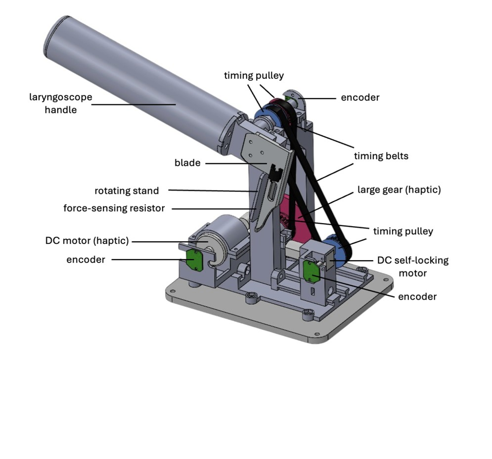
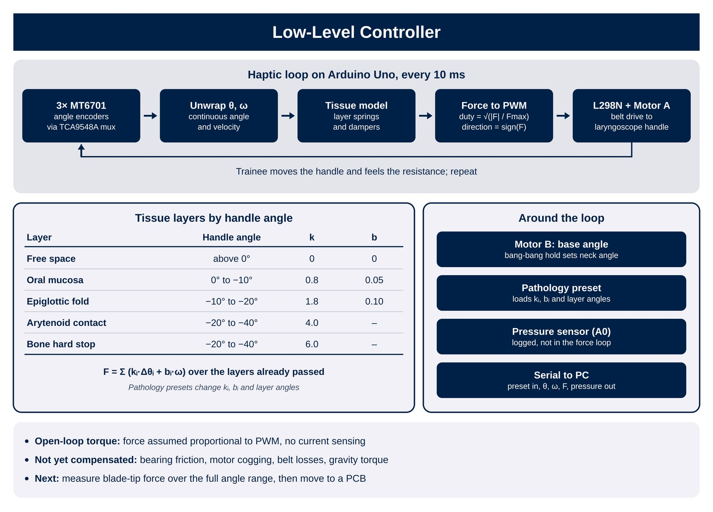
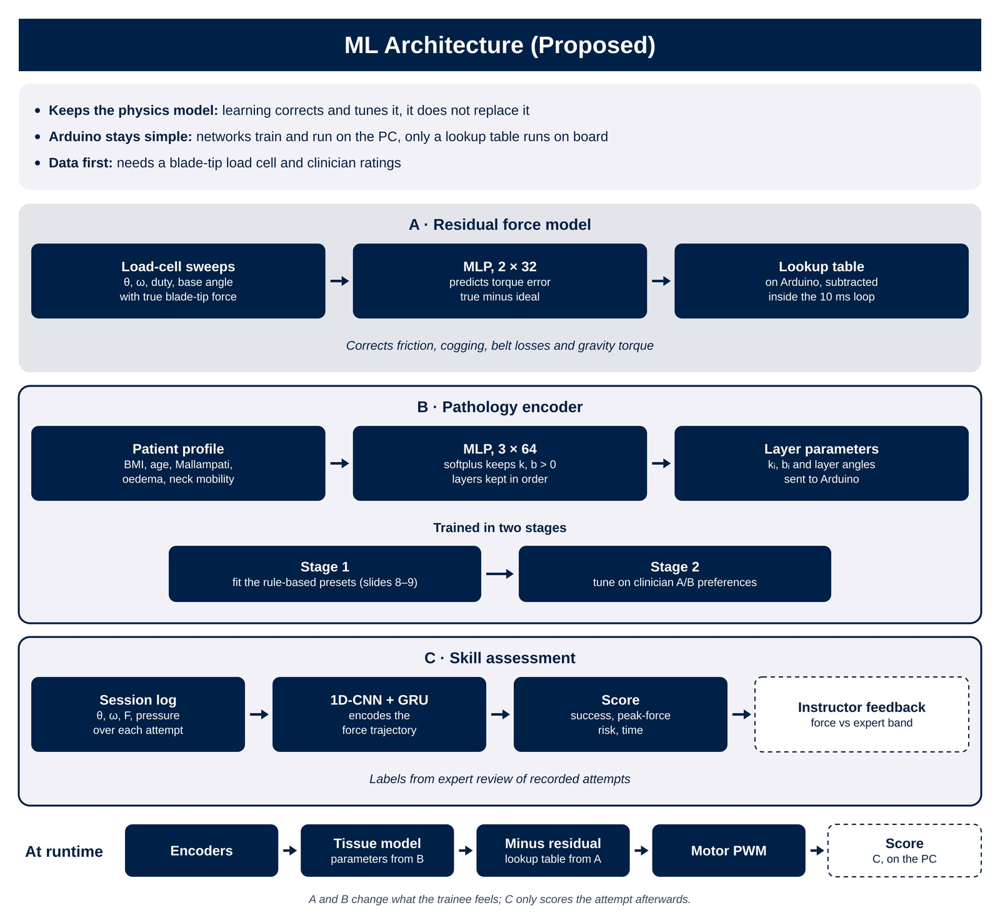

Haptic intubation trainer
A training device for tracheal intubation that simulates varied airway conditions.
Background
Tracheal intubation is the insertion of a tube through the mouth or nose into the trachea, to keep the airway open and deliver oxygen. Success depends on modulating force through layered tissue: too much risks perforation, and too little leaves the vocal cords out of view.
Current training methods all fall short on that force judgement:
- Manikins are rigid plastic, so trainees learn the motion but not the feel of the tissue.
- Cadavers have realistic anatomy, but their tissue is stiffer than living tissue, and they are expensive and scarce.
- Real patients are the gold standard, but limit repetition, and specific scenarios can't be practised on demand.
- VR and screen simulators give visual feedback only, with no haptics.
No existing trainer gives realistic, tunable haptic feedback that maps to tissue biomechanics. Difficult airways, such as Mallampati III–IV, limited neck mobility or obesity, are what trainees most need to practise and the hardest to meet on real patients.
My work
I worked on this as a research intern in Oxford's Healthcare Biorobotics Lab, Institute of Biomedical Engineering, from June to December 2025.
- Upgraded the prior design with a new force-transfer mechanism, a state-estimating current controller (DC motor current control using only position encoders) and compact electronics.
- Proposed an ML force-sensing pipeline trained on real clinical data, achieving sub-50 ms latency and 5 Nm peak torque with industry-standard SNR.
Hardware


Control architecture
A haptic loop on an Arduino reads the handle angle from encoders every 10 ms and renders a layered tissue model: each layer the blade has passed (oral mucosa, epiglottic fold, arytenoid contact and a bone hard stop) adds a spring and damper. Pathology presets change each layer's stiffness and angle range, for example a wider soft layer for a high BMI or a stiffer epiglottis for Mallampati III–IV.

The proposed ML architecture keeps this physics model and learns to correct and tune it: a residual force model for friction, cogging and belt losses, a pathology encoder from patient profile to layer parameters, and a skill-assessment model that scores each attempt.
